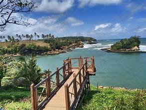
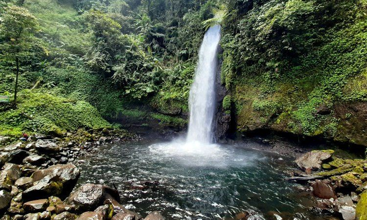
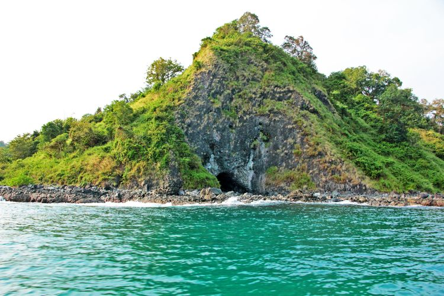

Destinasi Populer

Geopark Ciletuh
Keheningan dan kesejukan membuat hati menjadi tenang

Pantai Ujung Genteng
Pantai dengan keindahan yang luar biasa

Curug Cikaso
Genangan air yang membuat suasana indah

Situ Gunung Suspension Bridge
Gunung yang memiliki jembatan panjang di sukabumi

Pantai Amanda Ratu
Nikamati sunset terbaik di pantai ini

Gunung Gede Pangrango
Gunung paling populer di sukabumi
Danau Batu Bacan
Danau dengan view yang menakjubkan

Curug Sawer
Curah air yang membuat suasana hati menjadi ceria

Pulau Kunti
Pulau Kunti adalah destinasi wisata eksklusif di Sukabumi yang masih alami dan belum banyak dijamah wisatawan